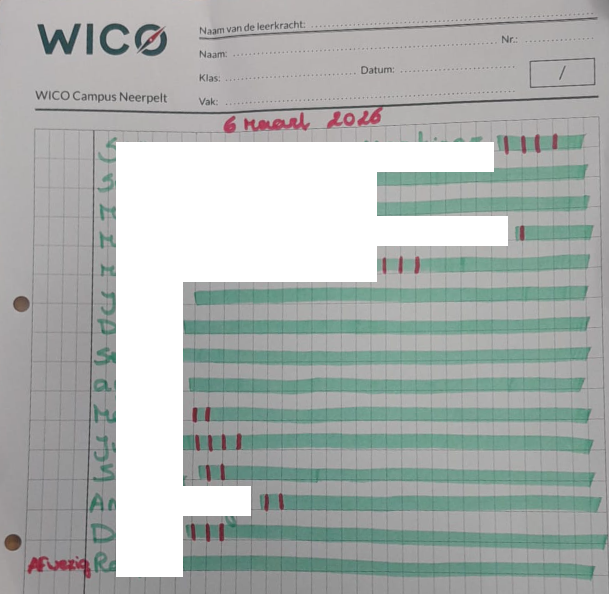

Over Mij

Hallo, ik ben Jan. Dit portfolio bundelt mijn leerproces, professionele groei en gerealiseerde projecten.
Hallo, ik ben Jan. Dit portfolio bundelt mijn leerproces, professionele groei en gerealiseerde projecten.
Ik volg momenteel de opleiding verkorte educatieve bachelor (VEB - EBA Secundair onderwijs - verkort 60 sp) aan de UCLL Diepenbeek.

Context
Maart 2026 – Neerpelt.
Ik geef les aan een klas van 16 leerlingen in het secundair onderwijs. Ik heb over het algemeen een goede vertrouwensband met mijn leerlingen en krijg regelmatig informatie over wat er in andere lessen gebeurt.
Situatieschets
Bij het binnenkomen van het klaslokaal hoorde ik een gesprek tussen enkele leerlingen. Zij waren aan het discussiëren over wie het meeste keren een voorwerp (pen, gom of prop papier) naar de leerkracht van het voorgaande lesuur had gegooid.
Omdat dit mij verontrustte, ben ik hierover in gesprek gegaan met de klas. Tijdens dit gesprek bleek dat de leerlingen sinds enkele weken een soort “spelletje” spelen waarbij ze proberen het lesgeven van deze leerkracht zo moeilijk mogelijk te maken. Wanneer de leerkracht zich naar het bord draait, gooit een leerling een voorwerp naar haar. Volgens de leerlingen gebeurt dit regelmatig. In een eerdere les zou zelfs een bananenschil gegooid zijn.
De klas heeft deze leerkracht meerdere lesuren per week.
De leerlingen toonden mij ook een handgeschreven blad waarop ze tijdens de vorige les hadden geturfd hoeveel keer elke leerling iets had gegooid. Eén leerling had dit initiatief genomen en hield per leerling het aantal “worpen” bij.
Mijn handelen
Ik ben met de klas in gesprek gegaan over dit gedrag. We hebben samen besproken of dit gepast gedrag is en wat dit met iemand kan doen wanneer dit hem of haar overkomt. Ik vroeg de leerlingen ook na te denken over hoe de betrokken leerkracht zich mogelijk voelt.
Daarna hebben we afgesproken dat dit gedrag niet meer zou voorkomen.
Binnen de klas heb ik drie leerlingen aangeduid die een zekere invloed hebben op de klasgroep en die ook duidelijk schuldinzicht toonden. Ik heb hen gevraagd om in de volgende lessen mee te helpen om de klas te weerhouden van dit gedrag.
In de daaropvolgende lessen heb ik regelmatig aan de klas gevraagd of dit gedrag zich nog had voorgedaan. Volgens de leerlingen is dit gestopt. Ik heb hen hiervoor gefeliciteerd en bedankt.
De leerlingen hadden mij echter ook gevraagd om de lijst met namen en aantallen niet te verspreiden.
Moreel dilemma
Hierdoor stel ik mezelf de vraag hoe ik als leerkracht verder moet omgaan met deze informatie.
Moet ik de betrokken collega aanspreken en haar informeren over wat er gebeurd is? Tot nu toe heeft zij zelf nooit expliciet verteld dat ze het moeilijk heeft met deze klas, hoewel we het al eerder over deze klasgroep hebben gehad.
Of moet ik de vertrouwensband met mijn leerlingen respecteren en hun vraag om de informatie niet verder te verspreiden honoreren?
Daarnaast stel ik mij de vraag of ik deze situatie moet bespreken met leerlingbegeleiding of de schoolleiding.

Je kan zoveel van deze blokken toevoegen als je wil. Kopieer gewoon een content-block en pas de tekst en afbeelding aan.
Email: jan.vanoppen[AT]student.ucll.be